import numpy as np
import pandas as pd
from pandas import Series, DataFrameThis post covers topics from Lillian Pierson’s Linkedin Learning course Python for Data Sciene Training Part 1. Topics include Series, Data Frames, Data Visuals, Math and Statistics.
0.0 Introduction
0.0.1 Import Packages
0.0.2 Print Working Directory
%pwd'/Users/randi/Desktop/2022/rbolt22/blog/01_blog/2022_11_28_python-beg'1.0 Series
1.0.1 Create a Series object with 8 rows.
series_obj = Series(np.arange(8), index=['row 1', 'row 2', 'row 3', 'row 4', 'row 5', 'row 6', 'row 7', 'row 8'])
series_objrow 1 0
row 2 1
row 3 2
row 4 3
row 5 4
row 6 5
row 7 6
row 8 7
dtype: int641.1 Extracting
1.1.1 Select row 7
series_obj['row 7']61.1.2 Select Elements at Position 0 and 7
series_obj[[0,7]]row 1 0
row 8 7
dtype: int641.2 Slicing
Select every row between 3 and 7.
series_obj['row 3':'row 7']row 3 2
row 4 3
row 5 4
row 6 5
row 7 6
dtype: int641.3 Scalars
1.3.1 Print values greater than 5.
series_obj[series_obj>5]row 7 6
row 8 7
dtype: int641.3.2 Set row 1 to the value 8.
series_obj['row 1'] = 8
series_objrow 1 8
row 2 1
row 3 2
row 4 3
row 5 4
row 6 5
row 7 6
row 8 7
dtype: int641.4 Missing Values
1.4.1 Create a variable of missing values using np.nan
- np.nan: numpy function, not a number (nan)
missing = np.nan
missingnan1.4.2 Create a new series object with missing values for row 3 and 7.
series_obj2 = Series(['row 1', 'row 2', missing , 'row 5', 'row 6', missing, 'row 8'])
series_obj20 row 1
1 row 2
2 NaN
3 row 5
4 row 6
5 NaN
6 row 8
dtype: object1.4.3 Find what values are missing using .isnull()
- isnull(): pandas function that returns t/f if null
series_obj2.isnull()0 False
1 False
2 True
3 False
4 False
5 True
6 False
dtype: bool1.5 Rename Data
1.5.1 Name series object.
series_obj.name ="added_variable"
series_objrow 1 8
row 2 1
row 3 2
row 4 3
row 5 4
row 6 5
row 7 6
row 8 7
Name: added_variable, dtype: int642.0 Data Frame
2.0.1 Create a data frame object of 36 random numbers (6X6) with a set seed of 25.
- np.random.seed(): numpy seed generator function
- np.random.rand(): numpy random number generator function
- reshape(): numpy function to reshape data frame
np.random.seed(25)
DF_obj = DataFrame(np.random.rand(36).reshape((6,6)),
index = ['row 1', 'row 2', 'row 3', 'row 4', 'row 5', 'row 6'],
columns = ['column 1', 'column 2', 'column 3', 'column 4', 'column 5', 'column 6'])
DF_obj| column 1 | column 2 | column 3 | column 4 | column 5 | column 6 | |
|---|---|---|---|---|---|---|
| row 1 | 0.870124 | 0.582277 | 0.278839 | 0.185911 | 0.411100 | 0.117376 |
| row 2 | 0.684969 | 0.437611 | 0.556229 | 0.367080 | 0.402366 | 0.113041 |
| row 3 | 0.447031 | 0.585445 | 0.161985 | 0.520719 | 0.326051 | 0.699186 |
| row 4 | 0.366395 | 0.836375 | 0.481343 | 0.516502 | 0.383048 | 0.997541 |
| row 5 | 0.514244 | 0.559053 | 0.034450 | 0.719930 | 0.421004 | 0.436935 |
| row 6 | 0.281701 | 0.900274 | 0.669612 | 0.456069 | 0.289804 | 0.525819 |
2.1 Extracting
2.1.1 Select values from row 2, row 5, column 5, and column 2.
DF_obj.loc[['row 2', 'row 5'], ['column 5', 'column 2']]| column 5 | column 2 | |
|---|---|---|
| row 2 | 0.402366 | 0.437611 |
| row 5 | 0.421004 | 0.559053 |
2.2 Scalars
2.2.1 Return a true or false for all values less than .2
DF_obj < .2| column 1 | column 2 | column 3 | column 4 | column 5 | column 6 | |
|---|---|---|---|---|---|---|
| row 1 | False | False | False | True | False | True |
| row 2 | False | False | False | False | False | True |
| row 3 | False | False | True | False | False | False |
| row 4 | False | False | False | False | False | False |
| row 5 | False | False | True | False | False | False |
| row 6 | False | False | False | False | False | False |
2.3 Missing Values
2.3.1 Set the values in rows 4-5 of column 1, and rows 2-4 of column 6 to missing.
- iloc: python function used to select a particular cell of the dataset.
DF_obj.iloc[3:5, 0] = missing
DF_obj.iloc[1:4, 5] = missing
DF_obj| column 1 | column 2 | column 3 | column 4 | column 5 | column 6 | |
|---|---|---|---|---|---|---|
| row 1 | 0.870124 | 0.582277 | 0.278839 | 0.185911 | 0.411100 | 0.117376 |
| row 2 | 0.684969 | 0.437611 | 0.556229 | 0.367080 | 0.402366 | NaN |
| row 3 | 0.447031 | 0.585445 | 0.161985 | 0.520719 | 0.326051 | NaN |
| row 4 | NaN | 0.836375 | 0.481343 | 0.516502 | 0.383048 | NaN |
| row 5 | NaN | 0.559053 | 0.034450 | 0.719930 | 0.421004 | 0.436935 |
| row 6 | 0.281701 | 0.900274 | 0.669612 | 0.456069 | 0.289804 | 0.525819 |
2.3.2 Replace non values with 0.
- fillna: pandas function used to replace missing values.
# fill NaN values with 0
filled_DF = DF_obj.fillna(0)
filled_DF| column 1 | column 2 | column 3 | column 4 | column 5 | column 6 | |
|---|---|---|---|---|---|---|
| row 1 | 0.870124 | 0.582277 | 0.278839 | 0.185911 | 0.411100 | 0.117376 |
| row 2 | 0.684969 | 0.437611 | 0.556229 | 0.367080 | 0.402366 | 0.000000 |
| row 3 | 0.447031 | 0.585445 | 0.161985 | 0.520719 | 0.326051 | 0.000000 |
| row 4 | 0.000000 | 0.836375 | 0.481343 | 0.516502 | 0.383048 | 0.000000 |
| row 5 | 0.000000 | 0.559053 | 0.034450 | 0.719930 | 0.421004 | 0.436935 |
| row 6 | 0.281701 | 0.900274 | 0.669612 | 0.456069 | 0.289804 | 0.525819 |
2.3.3 Count the number of missing values in each column.
DF_obj.isnull().sum()column 1 2
column 2 0
column 3 0
column 4 0
column 5 0
column 6 3
dtype: int642.3.4 Filter out rows with missing values.
- dropna(): pandas function that removes rows with missing values.
DF_no_NaN_rows = DF_obj.dropna()
DF_no_NaN_rows| column 1 | column 2 | column 3 | column 4 | column 5 | column 6 | |
|---|---|---|---|---|---|---|
| row 1 | 0.870124 | 0.582277 | 0.278839 | 0.185911 | 0.411100 | 0.117376 |
| row 6 | 0.281701 | 0.900274 | 0.669612 | 0.456069 | 0.289804 | 0.525819 |
2.3.5 Filter out columns with missing values.
DF_no_NaN_columns = DF_obj.dropna(axis=1)
DF_no_NaN_columns| column 2 | column 3 | column 4 | column 5 | |
|---|---|---|---|---|
| row 1 | 0.582277 | 0.278839 | 0.185911 | 0.411100 |
| row 2 | 0.437611 | 0.556229 | 0.367080 | 0.402366 |
| row 3 | 0.585445 | 0.161985 | 0.520719 | 0.326051 |
| row 4 | 0.836375 | 0.481343 | 0.516502 | 0.383048 |
| row 5 | 0.559053 | 0.034450 | 0.719930 | 0.421004 |
| row 6 | 0.900274 | 0.669612 | 0.456069 | 0.289804 |
2.3.6 Fill the missing values with the method ffill.
- ffill: pandas function fill forward which fills in the lass non-null value in DF.
fill_DF = DF_obj.fillna(method='ffill')
fill_DF| column 1 | column 2 | column 3 | column 4 | column 5 | column 6 | |
|---|---|---|---|---|---|---|
| row 1 | 0.870124 | 0.582277 | 0.278839 | 0.185911 | 0.411100 | 0.117376 |
| row 2 | 0.684969 | 0.437611 | 0.556229 | 0.367080 | 0.402366 | 0.117376 |
| row 3 | 0.447031 | 0.585445 | 0.161985 | 0.520719 | 0.326051 | 0.117376 |
| row 4 | 0.447031 | 0.836375 | 0.481343 | 0.516502 | 0.383048 | 0.117376 |
| row 5 | 0.447031 | 0.559053 | 0.034450 | 0.719930 | 0.421004 | 0.436935 |
| row 6 | 0.281701 | 0.900274 | 0.669612 | 0.456069 | 0.289804 | 0.525819 |
2.4 Duplicates
2.4.1 Create a new data frame object.
DF_obj2 = DataFrame({'column 1':[1,1,2,2,3,3,3],
'column 2' :['a', 'a', 'b', 'b', 'c','c','c'],
'column 3': ['A','A','B','B','C','C','C']})
DF_obj2| column 1 | column 2 | column 3 | |
|---|---|---|---|
| 0 | 1 | a | A |
| 1 | 1 | a | A |
| 2 | 2 | b | B |
| 3 | 2 | b | B |
| 4 | 3 | c | C |
| 5 | 3 | c | C |
| 6 | 3 | c | C |
2.4.2 Show which rows have duplicates.
- duplicated(): pandas function that returns t/f for rows with duplicate values.
DF_obj2.duplicated()0 False
1 True
2 False
3 True
4 False
5 True
6 True
dtype: bool2.4.3 Drop duplicates rows.
- drop_duplicates()
DF_obj2_row_drop = DF_obj2.drop_duplicates()
DF_obj2_row_drop| column 1 | column 2 | column 3 | |
|---|---|---|---|
| 0 | 1 | a | A |
| 2 | 2 | b | B |
| 4 | 3 | c | C |
2.4.4 Drop duplicate from column 3.
DF_obj2_c3_drop = DF_obj2.drop_duplicates(['column 3'])
DF_obj2_c3_drop| column 1 | column 2 | column 3 | |
|---|---|---|---|
| 0 | 1 | a | A |
| 2 | 2 | b | B |
| 4 | 3 | c | C |
2.5 Adding data
2.5.1 Slice the first 6 rows of series object.
new_series_obj = series_obj['row 0':'row 6']
new_series_objrow 1 8
row 2 1
row 3 2
row 4 3
row 5 4
row 6 5
Name: added_variable, dtype: int642.5.2 Add new_series_obj to the end of DF_obj
variable_added = DataFrame.join(DF_obj, series_obj)
variable_added| column 1 | column 2 | column 3 | column 4 | column 5 | column 6 | added_variable | |
|---|---|---|---|---|---|---|---|
| row 1 | 0.870124 | 0.582277 | 0.278839 | 0.185911 | 0.411100 | 0.117376 | 8 |
| row 2 | 0.684969 | 0.437611 | 0.556229 | 0.367080 | 0.402366 | NaN | 1 |
| row 3 | 0.447031 | 0.585445 | 0.161985 | 0.520719 | 0.326051 | NaN | 2 |
| row 4 | NaN | 0.836375 | 0.481343 | 0.516502 | 0.383048 | NaN | 3 |
| row 5 | NaN | 0.559053 | 0.034450 | 0.719930 | 0.421004 | 0.436935 | 4 |
| row 6 | 0.281701 | 0.900274 | 0.669612 | 0.456069 | 0.289804 | 0.525819 | 5 |
2.5.3 Use append to add data table to itself retaining index values.
added_datatable = variable_added.append(variable_added, ignore_index=False)
added_datatable/var/folders/90/4rtssdj16dl23f_f66qj0t3w0000gn/T/ipykernel_4716/426574045.py:1: FutureWarning: The frame.append method is deprecated and will be removed from pandas in a future version. Use pandas.concat instead.
added_datatable = variable_added.append(variable_added, ignore_index=False)| column 1 | column 2 | column 3 | column 4 | column 5 | column 6 | added_variable | |
|---|---|---|---|---|---|---|---|
| row 1 | 0.870124 | 0.582277 | 0.278839 | 0.185911 | 0.411100 | 0.117376 | 8 |
| row 2 | 0.684969 | 0.437611 | 0.556229 | 0.367080 | 0.402366 | NaN | 1 |
| row 3 | 0.447031 | 0.585445 | 0.161985 | 0.520719 | 0.326051 | NaN | 2 |
| row 4 | NaN | 0.836375 | 0.481343 | 0.516502 | 0.383048 | NaN | 3 |
| row 5 | NaN | 0.559053 | 0.034450 | 0.719930 | 0.421004 | 0.436935 | 4 |
| row 6 | 0.281701 | 0.900274 | 0.669612 | 0.456069 | 0.289804 | 0.525819 | 5 |
| row 1 | 0.870124 | 0.582277 | 0.278839 | 0.185911 | 0.411100 | 0.117376 | 8 |
| row 2 | 0.684969 | 0.437611 | 0.556229 | 0.367080 | 0.402366 | NaN | 1 |
| row 3 | 0.447031 | 0.585445 | 0.161985 | 0.520719 | 0.326051 | NaN | 2 |
| row 4 | NaN | 0.836375 | 0.481343 | 0.516502 | 0.383048 | NaN | 3 |
| row 5 | NaN | 0.559053 | 0.034450 | 0.719930 | 0.421004 | 0.436935 | 4 |
| row 6 | 0.281701 | 0.900274 | 0.669612 | 0.456069 | 0.289804 | 0.525819 | 5 |
2.5.4 Use append to add data table to itself, resetting index values.
added_datatable = variable_added.append(variable_added, ignore_index=True)
added_datatable/var/folders/90/4rtssdj16dl23f_f66qj0t3w0000gn/T/ipykernel_4716/4230768127.py:1: FutureWarning: The frame.append method is deprecated and will be removed from pandas in a future version. Use pandas.concat instead.
added_datatable = variable_added.append(variable_added, ignore_index=True)| column 1 | column 2 | column 3 | column 4 | column 5 | column 6 | added_variable | |
|---|---|---|---|---|---|---|---|
| 0 | 0.870124 | 0.582277 | 0.278839 | 0.185911 | 0.411100 | 0.117376 | 8 |
| 1 | 0.684969 | 0.437611 | 0.556229 | 0.367080 | 0.402366 | NaN | 1 |
| 2 | 0.447031 | 0.585445 | 0.161985 | 0.520719 | 0.326051 | NaN | 2 |
| 3 | NaN | 0.836375 | 0.481343 | 0.516502 | 0.383048 | NaN | 3 |
| 4 | NaN | 0.559053 | 0.034450 | 0.719930 | 0.421004 | 0.436935 | 4 |
| 5 | 0.281701 | 0.900274 | 0.669612 | 0.456069 | 0.289804 | 0.525819 | 5 |
| 6 | 0.870124 | 0.582277 | 0.278839 | 0.185911 | 0.411100 | 0.117376 | 8 |
| 7 | 0.684969 | 0.437611 | 0.556229 | 0.367080 | 0.402366 | NaN | 1 |
| 8 | 0.447031 | 0.585445 | 0.161985 | 0.520719 | 0.326051 | NaN | 2 |
| 9 | NaN | 0.836375 | 0.481343 | 0.516502 | 0.383048 | NaN | 3 |
| 10 | NaN | 0.559053 | 0.034450 | 0.719930 | 0.421004 | 0.436935 | 4 |
| 11 | 0.281701 | 0.900274 | 0.669612 | 0.456069 | 0.289804 | 0.525819 | 5 |
2.5.5 Create a 6x6 data frame with values arraged from 0-35, and another 3x5 data frame with values arranged from 0-14.
DF_obj3 = pd.DataFrame(np.arange(36).reshape(6,6))
DF_obj3
DF_obj4 = pd.DataFrame(np.arange(15).reshape(5,3))
DF_obj4| 0 | 1 | 2 | |
|---|---|---|---|
| 0 | 0 | 1 | 2 |
| 1 | 3 | 4 | 5 |
| 2 | 6 | 7 | 8 |
| 3 | 9 | 10 | 11 |
| 4 | 12 | 13 | 14 |
2.5.6 Concatenate by adding columns.
pd.concat([DF_obj3, DF_obj4], axis = 1)| 0 | 1 | 2 | 3 | 4 | 5 | 0 | 1 | 2 | |
|---|---|---|---|---|---|---|---|---|---|
| 0 | 0 | 1 | 2 | 3 | 4 | 5 | 0.0 | 1.0 | 2.0 |
| 1 | 6 | 7 | 8 | 9 | 10 | 11 | 3.0 | 4.0 | 5.0 |
| 2 | 12 | 13 | 14 | 15 | 16 | 17 | 6.0 | 7.0 | 8.0 |
| 3 | 18 | 19 | 20 | 21 | 22 | 23 | 9.0 | 10.0 | 11.0 |
| 4 | 24 | 25 | 26 | 27 | 28 | 29 | 12.0 | 13.0 | 14.0 |
| 5 | 30 | 31 | 32 | 33 | 34 | 35 | NaN | NaN | NaN |
2.5.7 Concatenate by adding rows.
pd.concat([DF_obj3, DF_obj4])| 0 | 1 | 2 | 3 | 4 | 5 | |
|---|---|---|---|---|---|---|
| 0 | 0 | 1 | 2 | 3.0 | 4.0 | 5.0 |
| 1 | 6 | 7 | 8 | 9.0 | 10.0 | 11.0 |
| 2 | 12 | 13 | 14 | 15.0 | 16.0 | 17.0 |
| 3 | 18 | 19 | 20 | 21.0 | 22.0 | 23.0 |
| 4 | 24 | 25 | 26 | 27.0 | 28.0 | 29.0 |
| 5 | 30 | 31 | 32 | 33.0 | 34.0 | 35.0 |
| 0 | 0 | 1 | 2 | NaN | NaN | NaN |
| 1 | 3 | 4 | 5 | NaN | NaN | NaN |
| 2 | 6 | 7 | 8 | NaN | NaN | NaN |
| 3 | 9 | 10 | 11 | NaN | NaN | NaN |
| 4 | 12 | 13 | 14 | NaN | NaN | NaN |
2.6 Grouping and Aggregating Data
2.6.1 Read cars csv with python.
address = '../../00_data/mtcars.csv'
cars = pd.read_csv(address)
# assign column names
cars.columns = ['car_names', 'mpg', 'cyl', 'disp', 'hp', 'drat', 'wt', 'qsec', 'vs', 'am', 'gear', 'carb']
cars.head()| car_names | mpg | cyl | disp | hp | drat | wt | qsec | vs | am | gear | carb | |
|---|---|---|---|---|---|---|---|---|---|---|---|---|
| 0 | Mazda RX4 | 21.0 | 6 | 160.0 | 110 | 3.90 | 2.620 | 16.46 | 0 | 1 | 4 | 4 |
| 1 | Mazda RX4 Wag | 21.0 | 6 | 160.0 | 110 | 3.90 | 2.875 | 17.02 | 0 | 1 | 4 | 4 |
| 2 | Datsun 710 | 22.8 | 4 | 108.0 | 93 | 3.85 | 2.320 | 18.61 | 1 | 1 | 4 | 1 |
| 3 | Hornet 4 Drive | 21.4 | 6 | 258.0 | 110 | 3.08 | 3.215 | 19.44 | 1 | 0 | 3 | 1 |
| 4 | Hornet Sportabout | 18.7 | 8 | 360.0 | 175 | 3.15 | 3.440 | 17.02 | 0 | 0 | 3 | 2 |
2.6.2 Group by cyl and find mean values.
cars_groups = cars.groupby(cars['cyl'])
cars_groups.mean()/var/folders/90/4rtssdj16dl23f_f66qj0t3w0000gn/T/ipykernel_4716/3858733335.py:2: FutureWarning: The default value of numeric_only in DataFrameGroupBy.mean is deprecated. In a future version, numeric_only will default to False. Either specify numeric_only or select only columns which should be valid for the function.
cars_groups.mean()| mpg | disp | hp | drat | wt | qsec | vs | am | gear | carb | |
|---|---|---|---|---|---|---|---|---|---|---|
| cyl | ||||||||||
| 4 | 26.663636 | 105.136364 | 82.636364 | 4.070909 | 2.285727 | 19.137273 | 0.909091 | 0.727273 | 4.090909 | 1.545455 |
| 6 | 19.742857 | 183.314286 | 122.285714 | 3.585714 | 3.117143 | 17.977143 | 0.571429 | 0.428571 | 3.857143 | 3.428571 |
| 8 | 15.100000 | 353.100000 | 209.214286 | 3.229286 | 3.999214 | 16.772143 | 0.000000 | 0.142857 | 3.285714 | 3.500000 |
2.6.3 Group by am and find mean values.
cars_trans_group = cars.groupby(cars['am'])
cars_trans_group.mean()/var/folders/90/4rtssdj16dl23f_f66qj0t3w0000gn/T/ipykernel_4716/564591146.py:2: FutureWarning: The default value of numeric_only in DataFrameGroupBy.mean is deprecated. In a future version, numeric_only will default to False. Either specify numeric_only or select only columns which should be valid for the function.
cars_trans_group.mean()| mpg | cyl | disp | hp | drat | wt | qsec | vs | gear | carb | |
|---|---|---|---|---|---|---|---|---|---|---|
| am | ||||||||||
| 0 | 17.147368 | 6.947368 | 290.378947 | 160.263158 | 3.286316 | 3.768895 | 18.183158 | 0.368421 | 3.210526 | 2.736842 |
| 1 | 24.392308 | 5.076923 | 143.530769 | 126.846154 | 4.050000 | 2.411000 | 17.360000 | 0.538462 | 4.384615 | 2.923077 |
3.0 Data Visuals
from numpy.random import randn
import matplotlib.pyplot as plt
from matplotlib import rcParams3.1 Line Charts
3.1.1 Plot a line chart with matplotlib.
x = range(1,10)
y = [1,2,3,4,0,4,3,2,1]
plt.plot(x,y)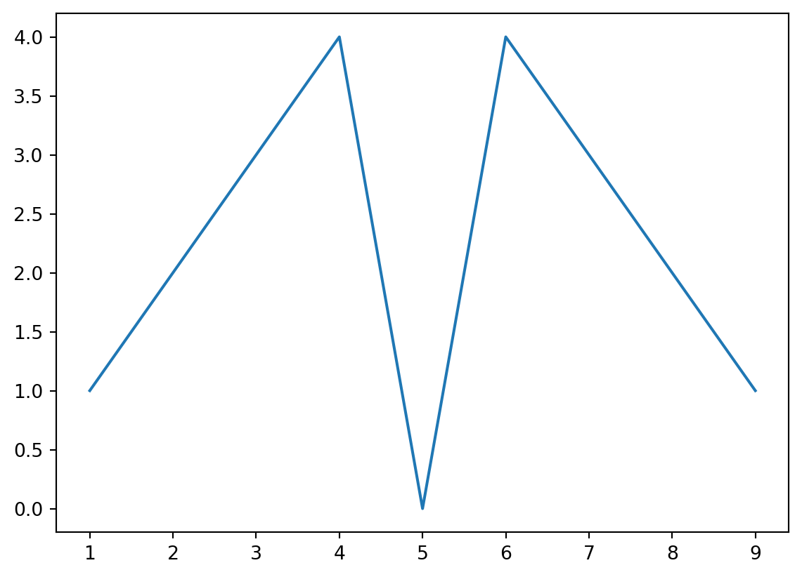
3.1.2 Defining axes, limits, and tick marks
# gerate a figure
fig = plt.figure()
# add axis
ax = fig.add_axes([.1,.1,1,1])
# add limits
ax.set_xlim([1,9])
ax.set_ylim([0,5])
# set tick marks
ax.set_xticks([0,1,2,4,5,6,8,9,10])
ax.set_yticks([0,1,2,3,4,5])
# plot
ax.plot(x,y)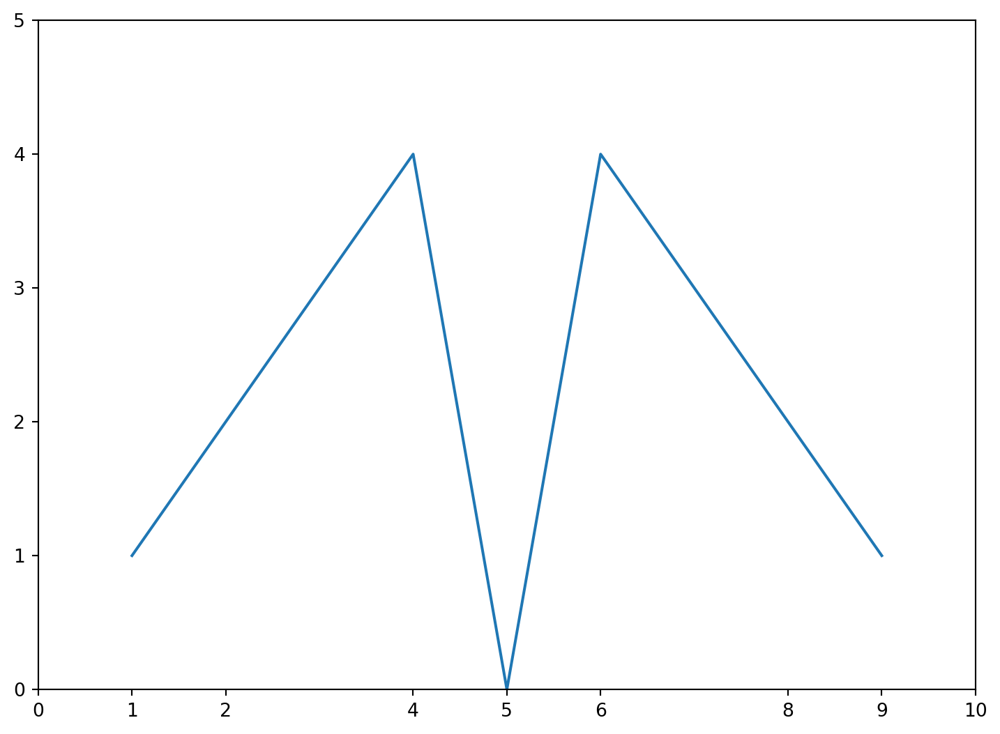
3.1.3 Add Grid
# gerate a figure
fig = plt.figure()
# add axis
ax = fig.add_axes([.1,.1,1,1])
# add limits
ax.set_xlim([1,9])
ax.set_ylim([0,5])
# add grid
ax.grid()
# plot
ax.plot(x,y)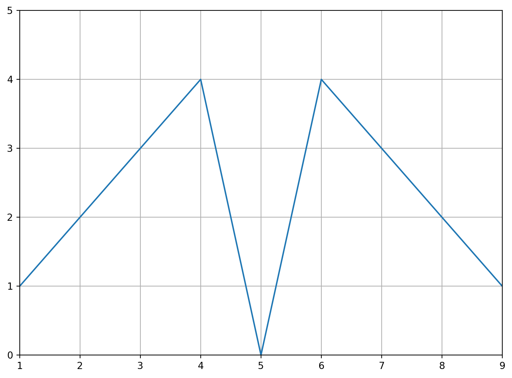
3.1.4 Create A plot with two lines
# create new variables
x1 = range(0,10)
y1 = [10,9,8,7,6,5,4,3,2,1]
# make line plot with two lines
plt.plot(x,y)
plt.plot(x1,y1)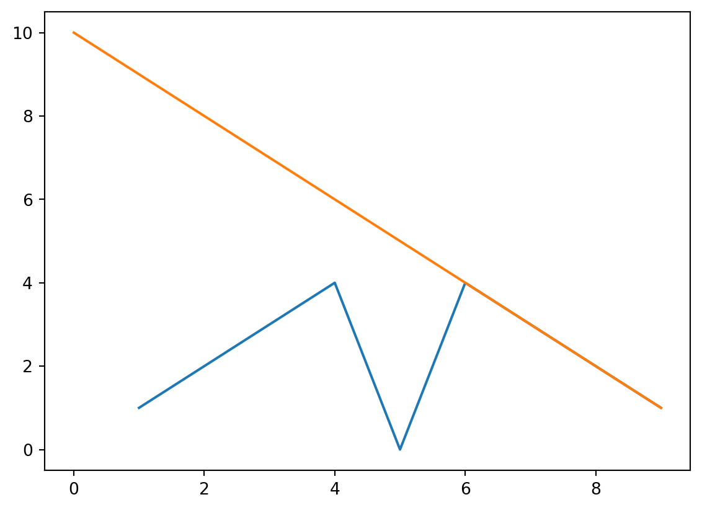
3.1.5 Customizing Line Styles
# make line plot with two lines with style
plt.plot(x,y, ds ='steps', lw=5)
plt.plot(x1,y1, ls='--', lw=10)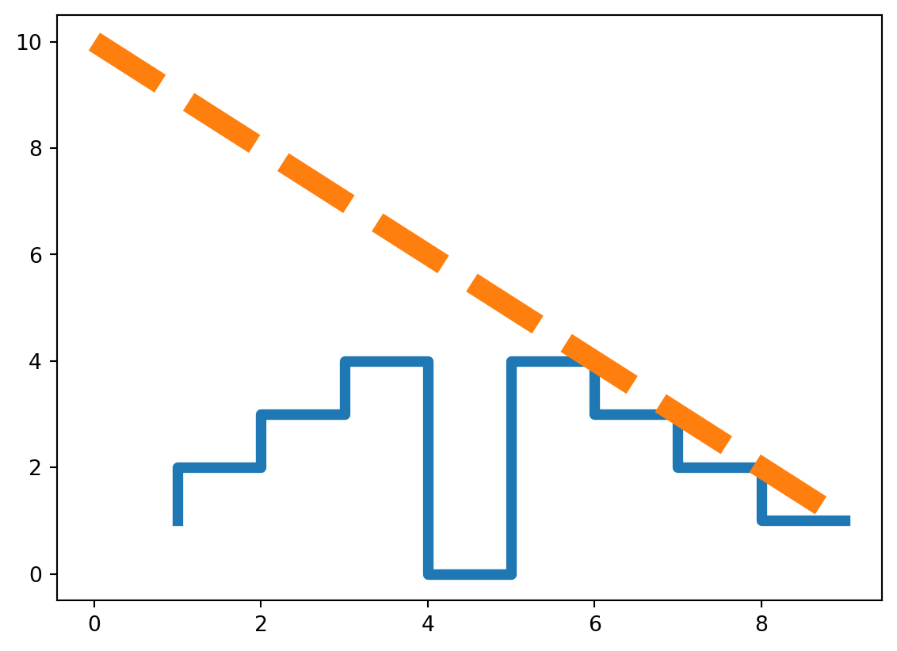
3.1.6 Customizing Markers
# make line plot with two lines with markers
plt.plot(x,y, marker='1', mew='20')
plt.plot(x1,y1, marker='+', mew=15)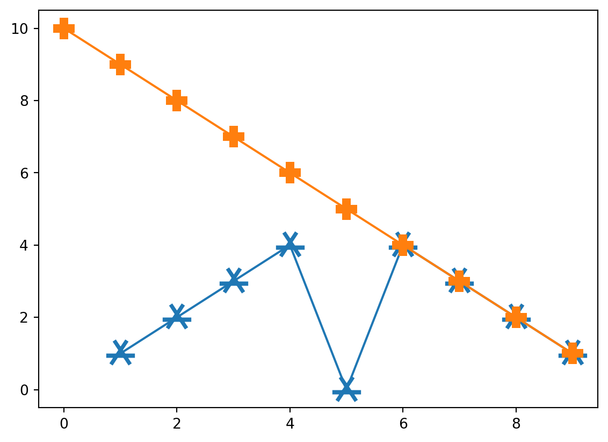
3.1.7 Generating Multiple Plots
# generate a figure
fig = plt.figure()
# create a tuple equal to the subplots function defined as 1 row with 2 columns
fig,(ax1, ax2) = plt.subplots(1,2)
# defining axes
ax1.plot(x)
ax2.plot(x,y)<Figure size 672x480 with 0 Axes>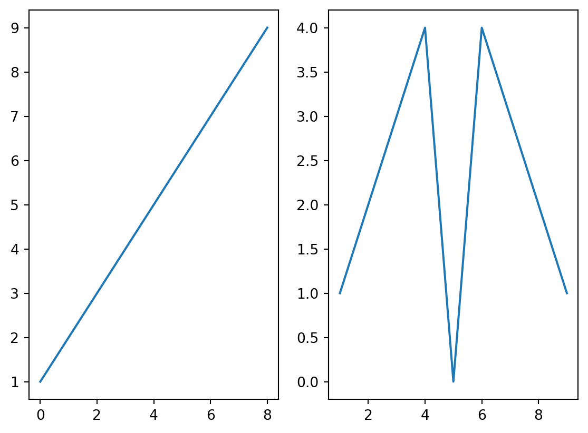
3.1.8 Plot a line chart with Pandas
Using the cars data set from 2.6.1:
# select mpg variable
mpg = cars['mpg']
# print plot
mpg.plot()<AxesSubplot: >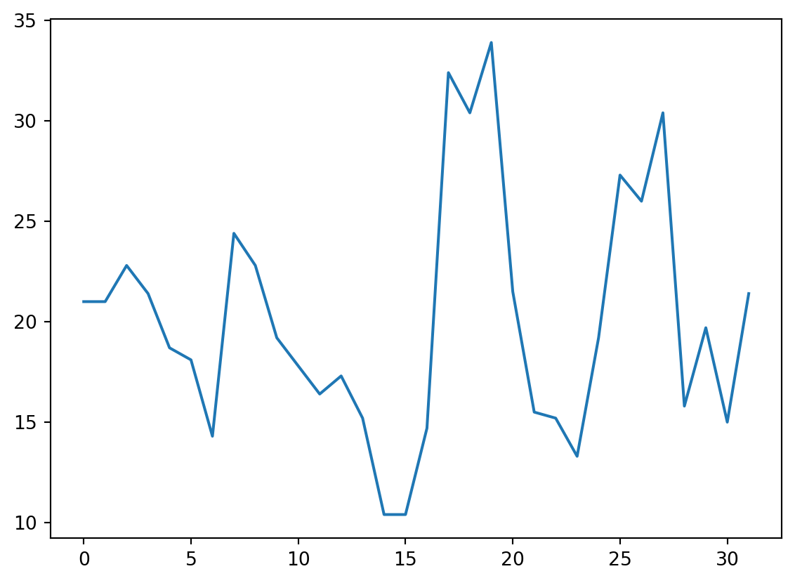
3.1.9 Plot 3 Variables
df = cars[['cyl','wt','mpg']]
df.plot()<AxesSubplot: >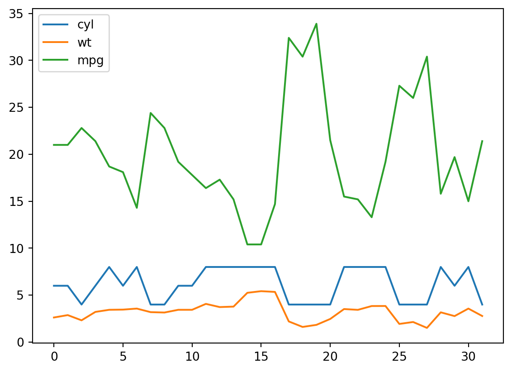
3.1.10 Define Color
# color
color_theme = ['darkgray', 'lightsalmon', 'powderblue']
# pass in color theme
df.plot(color=color_theme)<AxesSubplot: >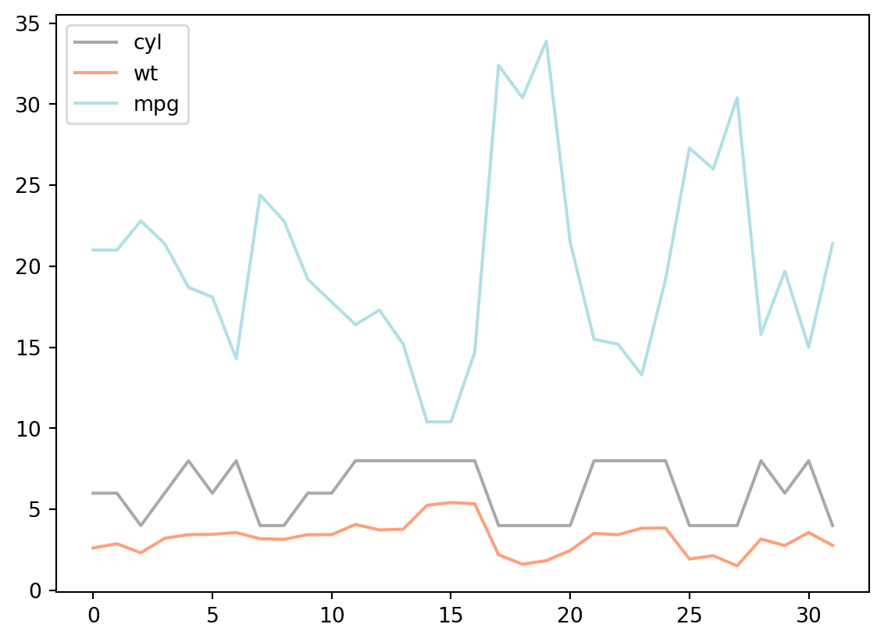
3.1.11 Add Labels (Object Oriented Method)
Note: Car names are numbers because of the data set I am using.
# create a figure
fig = plt.figure()
# add axis
ax = fig.add_axes([.1,.1,1,1])
# call plot method
mpg.plot()
# add tick marks
ax.set_xticks(range(32))
# add lables with 60 degree rotaion
ax.set_xticklabels(cars.car_names, rotation=60, fontsize='medium')
# set title
ax.set_title('Miles per Gallon of Cars in mtcars Dataset')
# set x and y lables
ax.set_xlabel('car names')
ax.set_ylabel('mpg')Text(0, 0.5, 'mpg')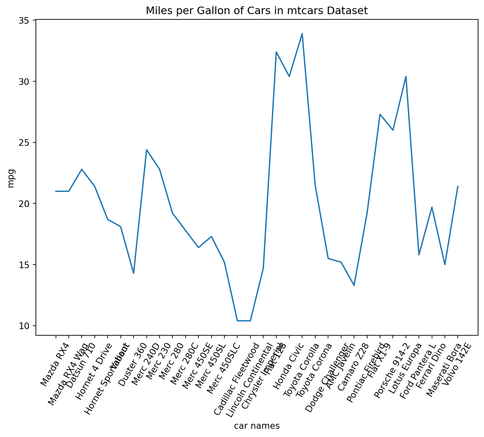
3.1.12 Add Legend (Object Oriented Method)
# create a figure
fig = plt.figure()
# add axis
ax = fig.add_axes([.1,.1,1,1])
# call plot method
mpg.plot()
# add tick marks
ax.set_xticks(range(32))
# add lables with 60 degree rotaion
ax.set_xticklabels(cars.car_names, rotation=60, fontsize='medium')
# set title
ax.set_title('Miles per Gallon of Cars in mtcars Dataset')
# set x and y lables
ax.set_xlabel('car names')
ax.set_ylabel('mpg')
# add legend
ax.legend(loc='best')<matplotlib.legend.Legend at 0x7fd01c481820>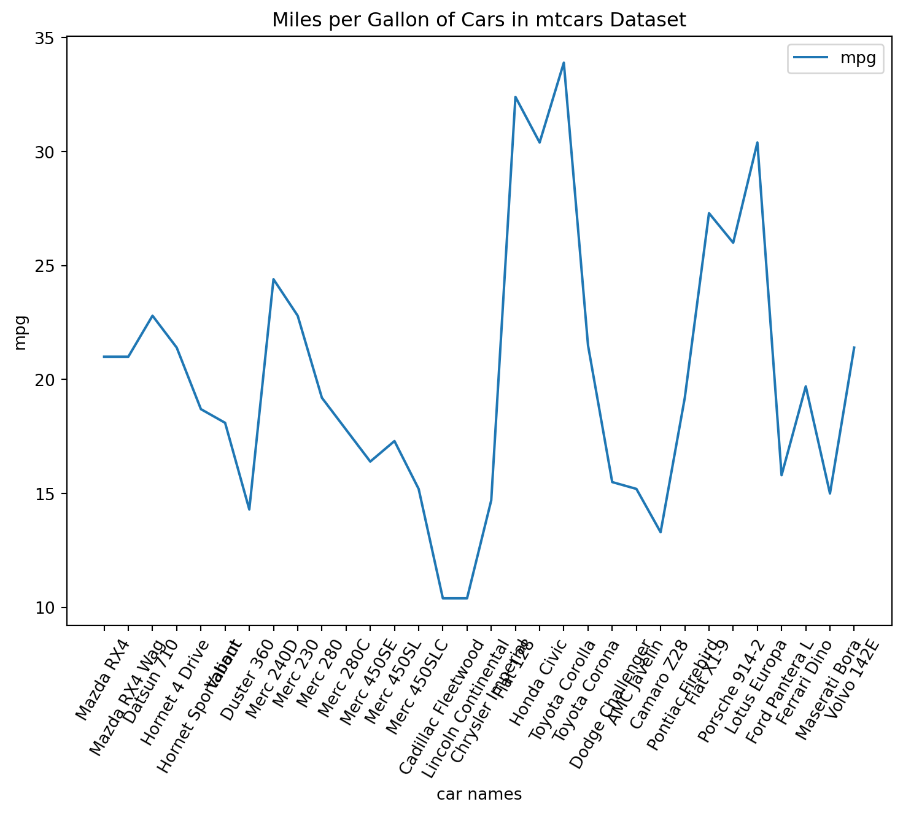
3.1.13 Annotating
# create a figure
fig = plt.figure()
# add axis
ax = fig.add_axes([.1,.1,1,1])
# call plot method
mpg.plot()
# add tick marks
ax.set_xticks(range(32))
# add lables with 60 degree rotaion
ax.set_xticklabels(cars.car_names, rotation=60, fontsize='medium')
# set title
ax.set_title('Miles per Gallon of Cars in mtcars Dataset')
# set x and y lables
ax.set_xlabel('car names')
ax.set_ylabel('mpg')
# add legend
ax.legend(loc='best')
# set y limit
ax.set_ylim([0,45])
# create annotation at (19,33.9) with text at (21,35) of an arrow
ax.annotate('Toyota Corolla', xy=(19,33.9), xytext=(21,35),
arrowprops=dict(facecolor='black', shrink=0.05))Text(21, 35, 'Toyota Corolla')
3.2 Bar Charts
3.2.1 Create a bar chart from a list
plt.bar(x,y)<BarContainer object of 9 artists>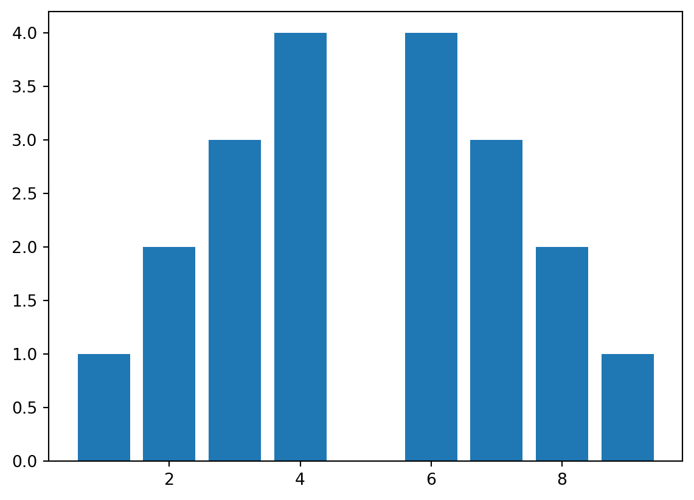
3.2.2 Define bar width and plot color
# widths to adjust default bar width
wide = [.5,.5,.5,.9,.9,.9,.5,.5,.5]
# change color
color = ['salmon']
# format barchart with adjustments
plt.bar(x,y, width=wide, color=color, align='center')<BarContainer object of 9 artists>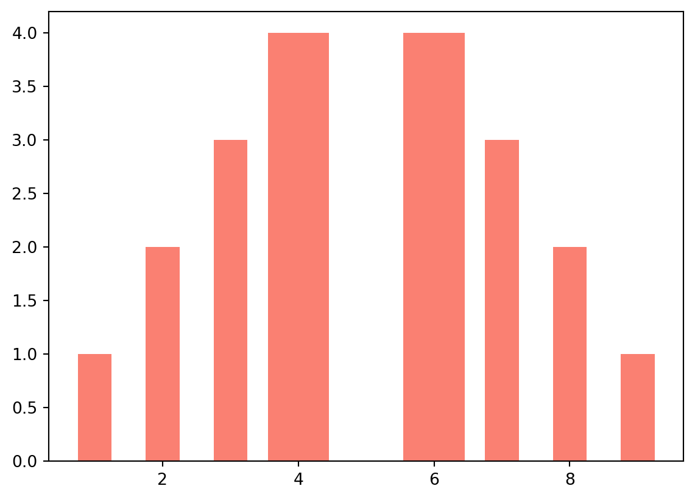
3.2.3 Create a bar chart from Pandas object
mpg.plot(kind="bar")<AxesSubplot: >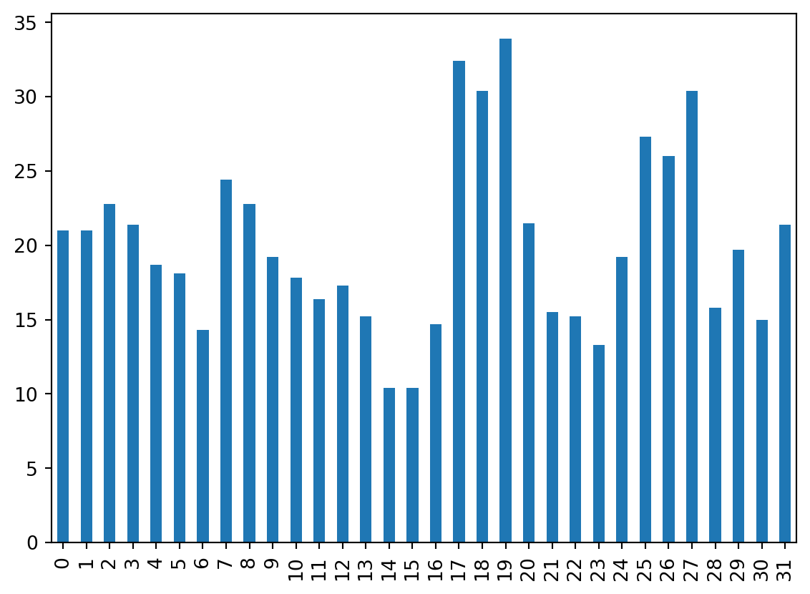
3.2.4 Create a horizontal bar chart
mpg.plot(kind="barh")<AxesSubplot: >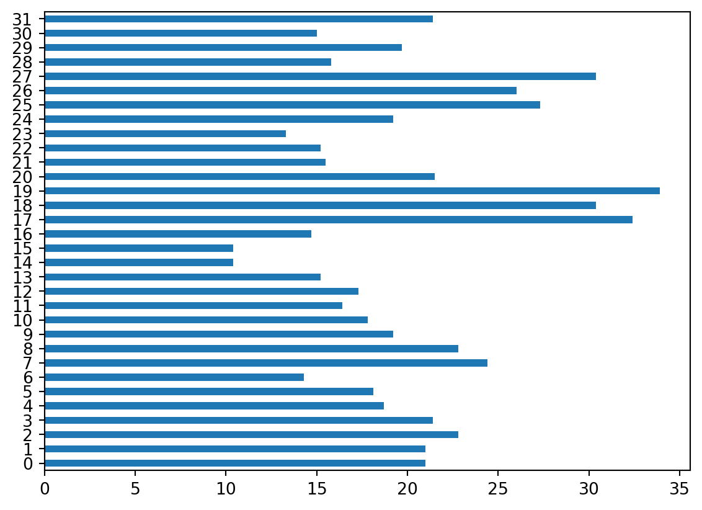
3.2.5 Add labels
# create variables
x = range(1,10)
y = [1,2,3,4,.5,4,3,2,1]
# generate barchart
plt.bar(x,y)
# add labels
plt.xlabel('your x-axis label')
plt.ylabel('your y-axis label')Text(0, 0.5, 'your y-axis label')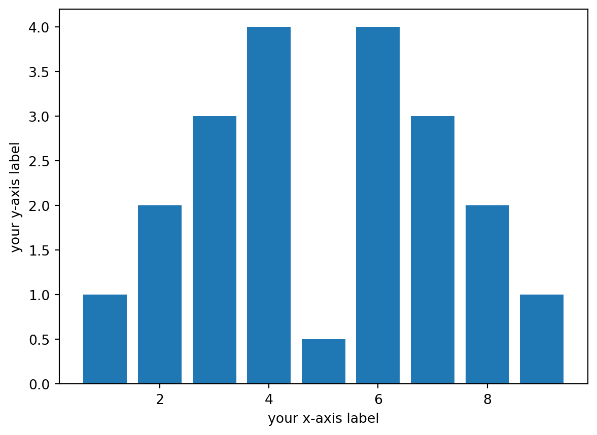
3.3 Pie Charts
3.3.1 Create a pie chart.
x = [1,2,3,4,0.5]
# create pie chart
plt.pie(x)
# show pie chart
plt.show()
3.3.2 Define Color
# create color theme with RGB code
color_theme = ['#A9A9A9', '#FFA07A', '#B0E0E6', '#FFE4C4', '#BDB76B']
# call pie function
plt.pie(x, colors=color_theme)
# show pie chart
plt.show()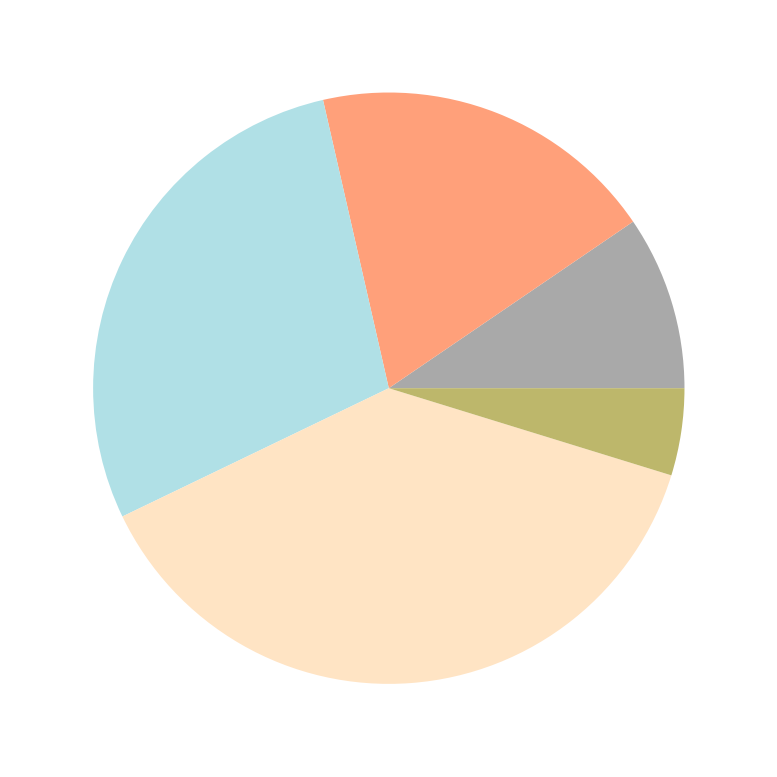
3.3.3 Add labels (Functional Method)
# create variable
z = [1,2,3,4,.5]
veh_type = ['bicycle', 'motorbike', 'car', 'van', 'stroller']
# generate pie chart
plt.pie(z, labels=veh_type)
# plot pie chart
plt.show()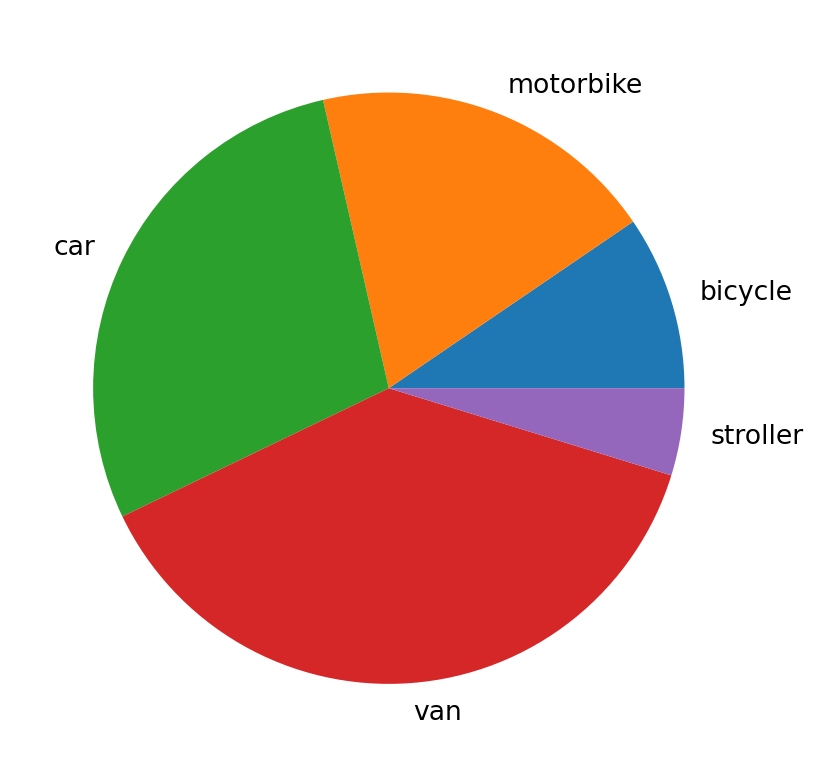
3.3.4 Add Legend
# create pie chart
plt.pie(x)
# create a legend located in the best location
plt.legend(veh_type, loc='best')
# show pot
plt.show()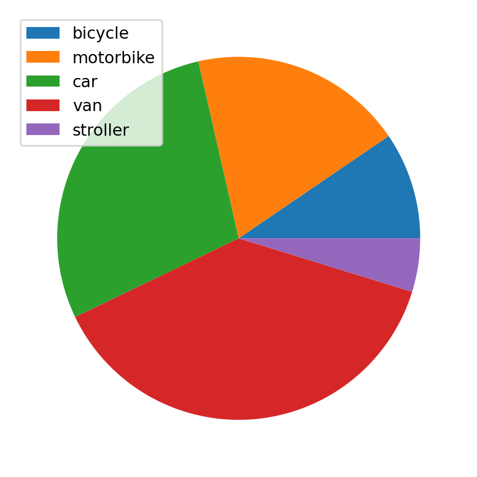
3.3.5Saving a pie chart
plt.pie(x)
plt.savefig('../../00_figs/pie-chart.png')
plt.show()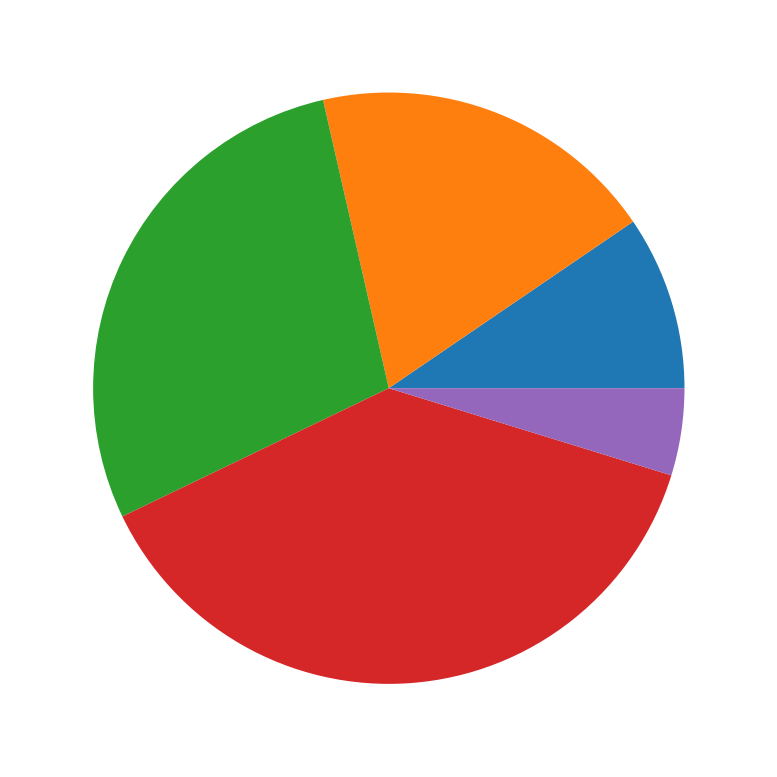
3.4 Time Series
3.4.0 Load Data
# address
address = '../../00_data/Superstore-Sales.csv'
# create a dataframe of csv file
df = pd.read_csv(address, index_col='Order Date', encoding='cp1252', parse_dates=True)
# look at first 5 records
df.head()| Row ID | Order ID | Order Priority | Order Quantity | Sales | Discount | Ship Mode | Profit | Unit Price | Shipping Cost | Customer Name | Province | Region | Customer Segment | Product Category | Product Sub-Category | Product Name | Product Container | Product Base Margin | Ship Date | |
|---|---|---|---|---|---|---|---|---|---|---|---|---|---|---|---|---|---|---|---|---|
| Order Date | ||||||||||||||||||||
| 2010-10-13 | 1 | 3 | Low | 6 | 261.5400 | 0.04 | Regular Air | -213.25 | 38.94 | 35.00 | Muhammed MacIntyre | Nunavut | Nunavut | Small Business | Office Supplies | Storage & Organization | Eldon Base for stackable storage shelf, platinum | Large Box | 0.80 | 10/20/2010 |
| 2012-10-01 | 49 | 293 | High | 49 | 10123.0200 | 0.07 | Delivery Truck | 457.81 | 208.16 | 68.02 | Barry French | Nunavut | Nunavut | Consumer | Office Supplies | Appliances | 1.7 Cubic Foot Compact "Cube" Office Refrigera... | Jumbo Drum | 0.58 | 10/2/2012 |
| 2012-10-01 | 50 | 293 | High | 27 | 244.5700 | 0.01 | Regular Air | 46.71 | 8.69 | 2.99 | Barry French | Nunavut | Nunavut | Consumer | Office Supplies | Binders and Binder Accessories | Cardinal Slant-D® Ring Binder, Heavy Gauge Vinyl | Small Box | 0.39 | 10/3/2012 |
| 2011-07-10 | 80 | 483 | High | 30 | 4965.7595 | 0.08 | Regular Air | 1198.97 | 195.99 | 3.99 | Clay Rozendal | Nunavut | Nunavut | Corporate | Technology | Telephones and Communication | R380 | Small Box | 0.58 | 7/12/2011 |
| 2010-08-28 | 85 | 515 | Not Specified | 19 | 394.2700 | 0.08 | Regular Air | 30.94 | 21.78 | 5.94 | Carlos Soltero | Nunavut | Nunavut | Consumer | Office Supplies | Appliances | Holmes HEPA Air Purifier | Medium Box | 0.50 | 8/30/2010 |
3.4.1 Use Sample Method to Create Line Chart
# use sample method
df2 = df.sample(n=100, random_state=25, axis=0)
# add labels
plt.xlabel('Order Date')
plt.ylabel('Order Quantity')
# add title
plt.title('Superstore Sales')
# select Order Quantity and plot
df2['Order Quantity'].plot()<AxesSubplot: title={'center': 'Superstore Sales'}, xlabel='Order Date', ylabel='Order Quantity'>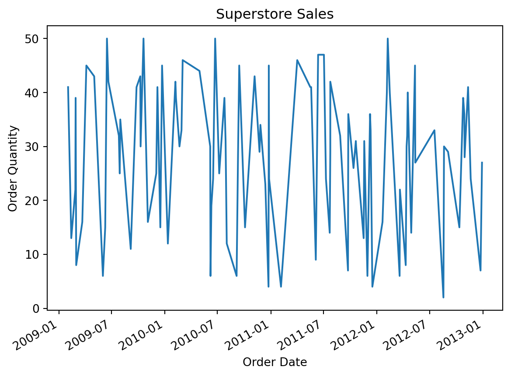
3.5 Statistical Plots
3.5.1 Scatterplot
# create a scatterplot with darkgray dots of size 150
cars.plot(kind='scatter', x='hp', y='mpg', c=['darkgray'], s=150)<AxesSubplot: xlabel='hp', ylabel='mpg'>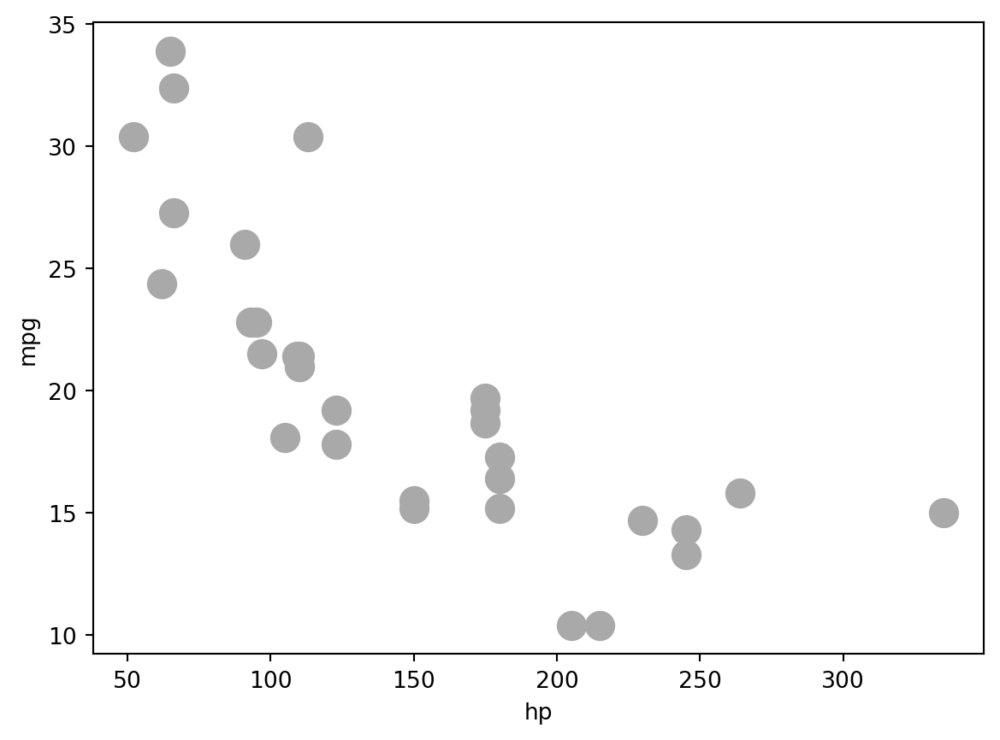
3.5.2 Boxplots
# create 2 boxplots with matplotlib
cars.boxplot(column='mpg', by='am')
cars.boxplot(column='wt', by='am')<AxesSubplot: title={'center': 'wt'}, xlabel='am'>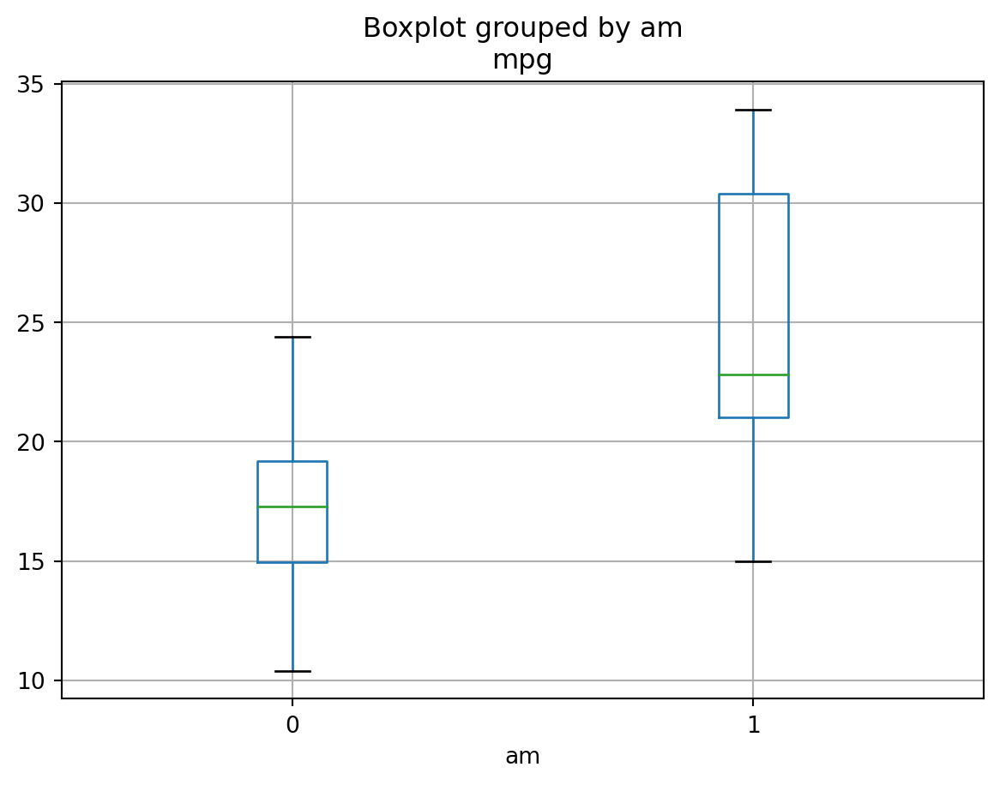
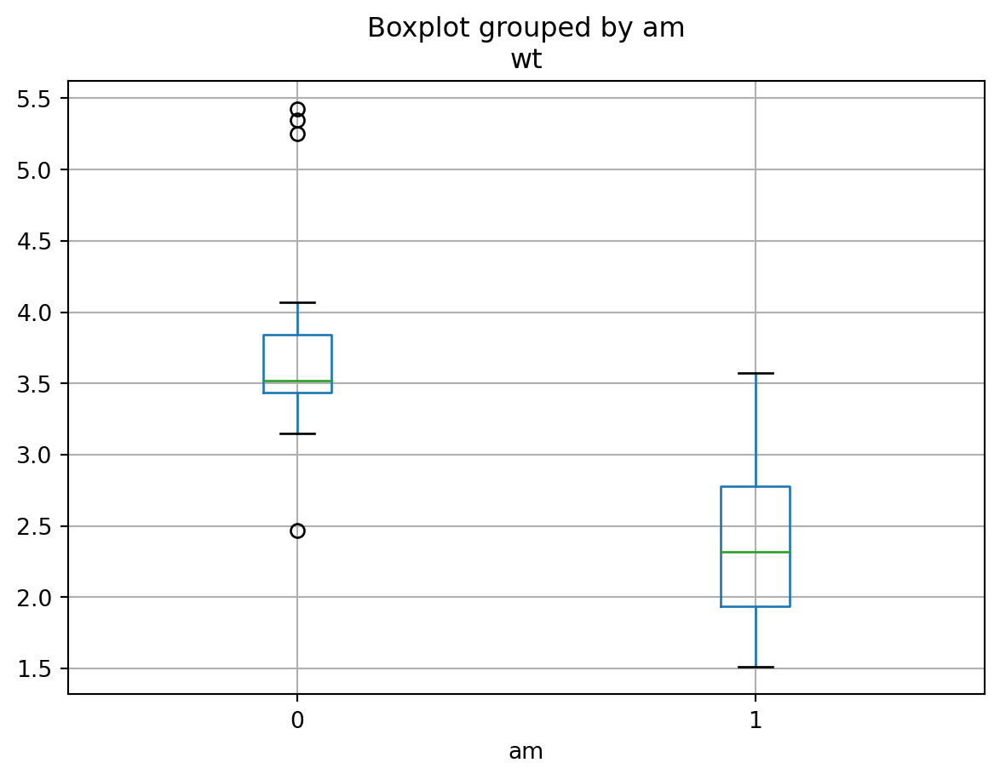
4.0 Math and Statistics
4.1 Arrays
4.1.1 Creating Arrays
a = np.array([1,2,3,4,5,6])
b = np.array([6,5,4,3,2,1])
a
barray([6, 5, 4, 3, 2, 1])4.1.2 Array Arithimetic
a*10
a+b
a-b
a*b
a/barray([0.16666667, 0.4 , 0.75 , 1.33333333, 2.5 ,
6. ])4.2 Matricies
4.2.1 Creating Matricies
aa = np.array([[2,3,6],[1,3,5],[10,20,30]])
bb = np.array([[0,1,2],[3,4,5],[6,7,8]])
aa
bbarray([[0, 1, 2],
[3, 4, 5],
[6, 7, 8]])4.2.2 Multiplying Matricies
aa*bbarray([[ 0, 3, 12],
[ 3, 12, 25],
[ 60, 140, 240]])4.2.3 Dot Product of Matricies
np.dot(aa,bb)array([[ 45, 56, 67],
[ 39, 48, 57],
[240, 300, 360]])4.3 Summary Statistics
4.3.1 Sum of Column values
cars.sum()car_names Mazda RX4Mazda RX4 WagDatsun 710Hornet 4 Drive...
mpg 642.9
cyl 198
disp 7383.1
hp 4694
drat 115.09
wt 102.952
qsec 571.16
vs 14
am 13
gear 118
carb 90
dtype: object4.3.2 Sum of Row values
cars.sum(axis=1)/var/folders/90/4rtssdj16dl23f_f66qj0t3w0000gn/T/ipykernel_4716/1808080884.py:1: FutureWarning: Dropping of nuisance columns in DataFrame reductions (with 'numeric_only=None') is deprecated; in a future version this will raise TypeError. Select only valid columns before calling the reduction.
cars.sum(axis=1)0 328.980
1 329.795
2 259.580
3 426.135
4 590.310
5 385.540
6 656.920
7 270.980
8 299.570
9 350.460
10 349.660
11 510.740
12 511.500
13 509.850
14 728.560
15 726.644
16 725.695
17 213.850
18 195.165
19 206.955
20 273.775
21 519.650
22 506.085
23 646.280
24 631.175
25 208.215
26 272.570
27 273.683
28 670.690
29 379.590
30 694.710
31 288.890
dtype: float644.3.3 Median
cars.median()/var/folders/90/4rtssdj16dl23f_f66qj0t3w0000gn/T/ipykernel_4716/2356643283.py:1: FutureWarning: The default value of numeric_only in DataFrame.median is deprecated. In a future version, it will default to False. In addition, specifying 'numeric_only=None' is deprecated. Select only valid columns or specify the value of numeric_only to silence this warning.
cars.median()mpg 19.200
cyl 6.000
disp 196.300
hp 123.000
drat 3.695
wt 3.325
qsec 17.710
vs 0.000
am 0.000
gear 4.000
carb 2.000
dtype: float644.3.4 Mean
cars.mean()/var/folders/90/4rtssdj16dl23f_f66qj0t3w0000gn/T/ipykernel_4716/1764053374.py:1: FutureWarning: The default value of numeric_only in DataFrame.mean is deprecated. In a future version, it will default to False. In addition, specifying 'numeric_only=None' is deprecated. Select only valid columns or specify the value of numeric_only to silence this warning.
cars.mean()mpg 20.090625
cyl 6.187500
disp 230.721875
hp 146.687500
drat 3.596563
wt 3.217250
qsec 17.848750
vs 0.437500
am 0.406250
gear 3.687500
carb 2.812500
dtype: float644.3.5 Max
cars.max()car_names Volvo 142E
mpg 33.9
cyl 8
disp 472.0
hp 335
drat 4.93
wt 5.424
qsec 22.9
vs 1
am 1
gear 5
carb 8
dtype: object4.3.6 Find index value for row with max value
mpg = cars.mpg
mpg.idxmax()194.3.7 Standard Deviation
cars.std()/var/folders/90/4rtssdj16dl23f_f66qj0t3w0000gn/T/ipykernel_4716/2703001680.py:1: FutureWarning: The default value of numeric_only in DataFrame.std is deprecated. In a future version, it will default to False. In addition, specifying 'numeric_only=None' is deprecated. Select only valid columns or specify the value of numeric_only to silence this warning.
cars.std()mpg 6.026948
cyl 1.785922
disp 123.938694
hp 68.562868
drat 0.534679
wt 0.978457
qsec 1.786943
vs 0.504016
am 0.498991
gear 0.737804
carb 1.615200
dtype: float644.3.8 Variance
cars.var()/var/folders/90/4rtssdj16dl23f_f66qj0t3w0000gn/T/ipykernel_4716/2053581105.py:1: FutureWarning: The default value of numeric_only in DataFrame.var is deprecated. In a future version, it will default to False. In addition, specifying 'numeric_only=None' is deprecated. Select only valid columns or specify the value of numeric_only to silence this warning.
cars.var()mpg 36.324103
cyl 3.189516
disp 15360.799829
hp 4700.866935
drat 0.285881
wt 0.957379
qsec 3.193166
vs 0.254032
am 0.248992
gear 0.544355
carb 2.608871
dtype: float644.3.9 Counts
gear = cars.gear
gear.value_counts()3 15
4 12
5 5
Name: gear, dtype: int644.3.10 Descriptive Statistics
cars.describe()| mpg | cyl | disp | hp | drat | wt | qsec | vs | am | gear | carb | |
|---|---|---|---|---|---|---|---|---|---|---|---|
| count | 32.000000 | 32.000000 | 32.000000 | 32.000000 | 32.000000 | 32.000000 | 32.000000 | 32.000000 | 32.000000 | 32.000000 | 32.0000 |
| mean | 20.090625 | 6.187500 | 230.721875 | 146.687500 | 3.596563 | 3.217250 | 17.848750 | 0.437500 | 0.406250 | 3.687500 | 2.8125 |
| std | 6.026948 | 1.785922 | 123.938694 | 68.562868 | 0.534679 | 0.978457 | 1.786943 | 0.504016 | 0.498991 | 0.737804 | 1.6152 |
| min | 10.400000 | 4.000000 | 71.100000 | 52.000000 | 2.760000 | 1.513000 | 14.500000 | 0.000000 | 0.000000 | 3.000000 | 1.0000 |
| 25% | 15.425000 | 4.000000 | 120.825000 | 96.500000 | 3.080000 | 2.581250 | 16.892500 | 0.000000 | 0.000000 | 3.000000 | 2.0000 |
| 50% | 19.200000 | 6.000000 | 196.300000 | 123.000000 | 3.695000 | 3.325000 | 17.710000 | 0.000000 | 0.000000 | 4.000000 | 2.0000 |
| 75% | 22.800000 | 8.000000 | 326.000000 | 180.000000 | 3.920000 | 3.610000 | 18.900000 | 1.000000 | 1.000000 | 4.000000 | 4.0000 |
| max | 33.900000 | 8.000000 | 472.000000 | 335.000000 | 4.930000 | 5.424000 | 22.900000 | 1.000000 | 1.000000 | 5.000000 | 8.0000 |
4.4 Summarizing Categorical Data
4.4.1 Count Carborators of Each Car
carb = cars.carb
carb.value_counts()4 10
2 10
1 7
3 3
6 1
8 1
Name: carb, dtype: int644.4.2 Group By Gear
# subset data
cars_cat = cars[['cyl', 'vs', 'am', 'gear', 'carb']]
# Group by gear
gears_group = cars_cat.groupby('gear')
gears_group.describe()| cyl | vs | ... | am | carb | |||||||||||||||||
|---|---|---|---|---|---|---|---|---|---|---|---|---|---|---|---|---|---|---|---|---|---|
| count | mean | std | min | 25% | 50% | 75% | max | count | mean | ... | 75% | max | count | mean | std | min | 25% | 50% | 75% | max | |
| gear | |||||||||||||||||||||
| 3 | 15.0 | 7.466667 | 1.187234 | 4.0 | 8.0 | 8.0 | 8.0 | 8.0 | 15.0 | 0.200000 | ... | 0.0 | 0.0 | 15.0 | 2.666667 | 1.175139 | 1.0 | 2.0 | 3.0 | 4.0 | 4.0 |
| 4 | 12.0 | 4.666667 | 0.984732 | 4.0 | 4.0 | 4.0 | 6.0 | 6.0 | 12.0 | 0.833333 | ... | 1.0 | 1.0 | 12.0 | 2.333333 | 1.302678 | 1.0 | 1.0 | 2.0 | 4.0 | 4.0 |
| 5 | 5.0 | 6.000000 | 2.000000 | 4.0 | 4.0 | 6.0 | 8.0 | 8.0 | 5.0 | 0.200000 | ... | 1.0 | 1.0 | 5.0 | 4.400000 | 2.607681 | 2.0 | 2.0 | 4.0 | 6.0 | 8.0 |
3 rows × 32 columns
4.4.3 Transforming Variables to Categorical Data type
# create new column
cars['group'] = pd.Series(cars.gear, dtype = 'category')
# look at new variable
cars['group'].dtypes
# look at distribution
cars['group'].value_counts()3 15
4 12
5 5
Name: group, dtype: int644.4.4 Describe Categorical Data with Crosstabs
pd.crosstab(cars['am'], cars['gear'])| gear | 3 | 4 | 5 |
|---|---|---|---|
| am | |||
| 0 | 15 | 4 | 0 |
| 1 | 0 | 8 | 5 |